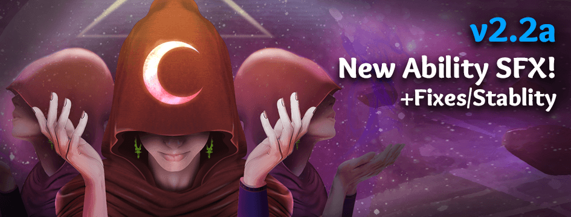

This is a follow-up patch to the v2.2 patch here:
https://forum.imperium42.com/t/2-2-patch-notes-live/75971/
Waiting for a bug fix? Chances are, it’s in here, in this not-so-mini “mini patch”!

v2.2.0a
Notable Bug Fixes / Improvements
-
Options freeze fixed, caused by an infinite-looping resolution (depending on your resolution options).
-
MVP aesthetics fixed (previously showing the literally-ordered top 3 as MVP).
-
“Queue as Group” has had a major back-end revamp to be faster and more reliable.
-
“Queue as Group” will no longer indefinitely freeze @ “Finding Group…” and now properly either A) Times out after 30s, or B) Times out earlier, if the leader is detected as disconnected.
-
If silenced/distracted, your emote button will temporarily be disabled to prevent metagaming.
-
Bleeding should now only have the shake/sfx to the targeted recipient (and caster).
-
Link Mind type abilities should now only make a sfx to the targeted recipient (and caster).
-
Poison will no longer cause the recipient to have a screen shake/sfx.
-
Kings will no longer see a boring white box in place of a disabled ability.
-
King’s “The Royal Finger” day ability will now play the sfx in the expected timing (when you finalize your decision, previously before you chose your target).
-
Clear Mind and Inoculate will no longer let the recipient know with sfx.
-
Options “Detailed Feedback”, “Glossary Links” and “Ability Sfx” now match the correct setting and show properly (they were either mismatching or poofing).
-
@ Mac/Linux: Discord RPC (rich presence) issues may have been resolved. Let me know if you see details when you click on yourself to view your Discord status, if enabled in Discord settings!
Minor Bug Fixes
-
Options resolution dropdown “weird results” fixed (sometimes it would show “fast” or blank buttons).
-
The new status icons (bleeding, etc) will no longer react to being clicked as if something happens when you click them.
-
Hovering of the top status icon (if 2 icons, such as Bleeding and Delayed Death) will no longer cause the icons to “spazz out”.
-
The Emote icon’s border has returned, and the white background no longer “leaks” out the edge.
-
Added a Heal tip on fail that includes the Possessor as a list of possible reasons why it failed.
-
Slightly less lag when dragging chat.
-
Stopped null errors for Deathnote dragging sfx when interrupted.
-
Contained the loading tips to remain within the bounds of the shadow.
-
Prevented a Friends List error when a friend tells you their updated status before your friends list has finished initializing.
-
Fixed deathnote draw sfx.
-
Fixed an annoying “Click” sound between in-game and game-over scenes.
-
If you and a friend are both queued, the Friends List friend is disabled since you cannot interact with them to invite/follow.
-
Clicking “Cancel” in settings no longer messes up tips or ability sfx options.
-
Options now shows missing resolutions that you know you should’ve shown.
Quality of Life
-
Moved streamer chat panel tabs more to the right so the UI isn’t crammed together with the top-left player info area.
-
Brought the lobby’s top-left Discord panel art back to full color/brightness (used to be washed-out).
-
Added the 2.2 promo art to the top-left Discord panel with subtle animations.
-
Friend list avatars have been centered (previously imbalanced) and added a border to look less “just pasted in there”.
-
Physician’s self heal now gives heal flash + heal sfx (instead of just a message that you healed yourself).
-
Added ability hover (subtle) and click sfx to main ability icons. About the targeting hover fx: Want this ultra subtle (similar to player list)? Or you like the clicks? Some say satisfying, some say annoying. Let me know in Discord #feedback-qol
-
Added hover colors for option dropdowns so they don’t all look disabled or frozen.
-
Players suspended during a live game (or in a lobby queue) will now immediately leave the room instead of wait up to 30 seconds to reveal the player left.
-
You may now add friends in Lobby by pressing ENTER (instead of just clicking the “+” button) after typing a name.
–Xblade